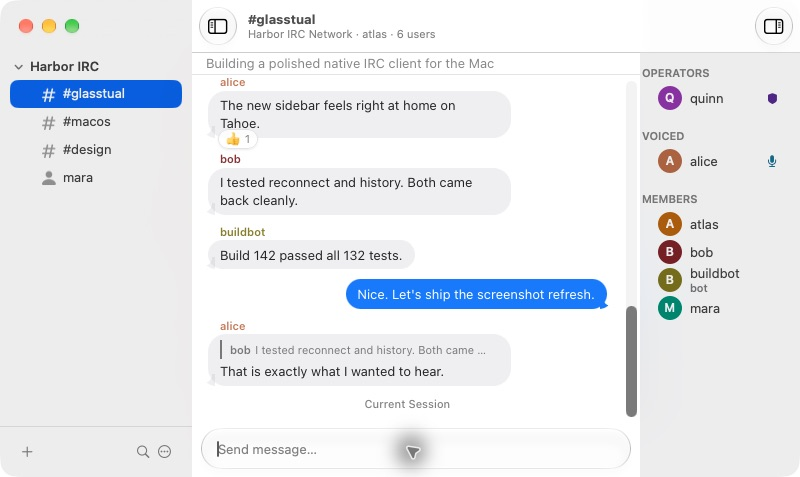
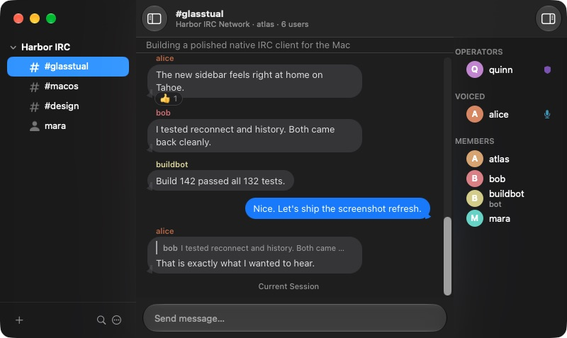
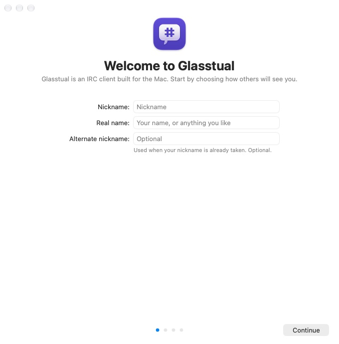
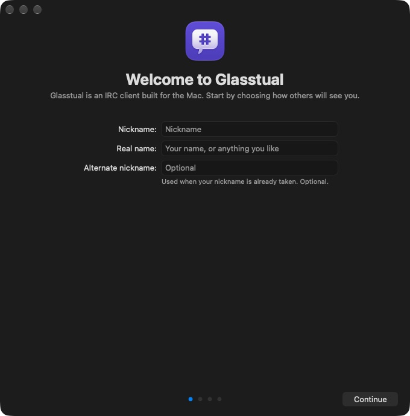

Modern IRC, properly supported
Replies, reactions, typing indicators, message history, read markers, SASL, server-time, and more. Glasstual negotiates the capabilities your server offers.
Meet Glasstual
A fast, customizable IRC client for macOS Tahoe, with modern IRCv3 features and a proper native interface.
Signed and notarized. Free and open source.
Comfortable in a crowd
Replies, reactions, typing indicators, message history, read markers, SASL, server-time, and more. Glasstual negotiates the capabilities your server offers.
Pick the compact IRC layout or a conversation view inspired by Messages. Both follow your Mac's appearance and accent colour.
Fine-tune alerts, highlights, behaviour, inline media, text, and themes. Power users can go further with CSS, JavaScript, Swift, and AppleScript.
Make it yours
Choose how chat looks, what earns your attention, and how Glasstual behaves on each network. The defaults get you connected quickly.
Conversation style
Built for macOS




The conversations in these screenshots come from a loopback-only demo network. No real accounts or messages are shown.
Ready when you are
Glasstual runs on macOS Tahoe and later on Apple silicon.
Download latest release Signed and notarized